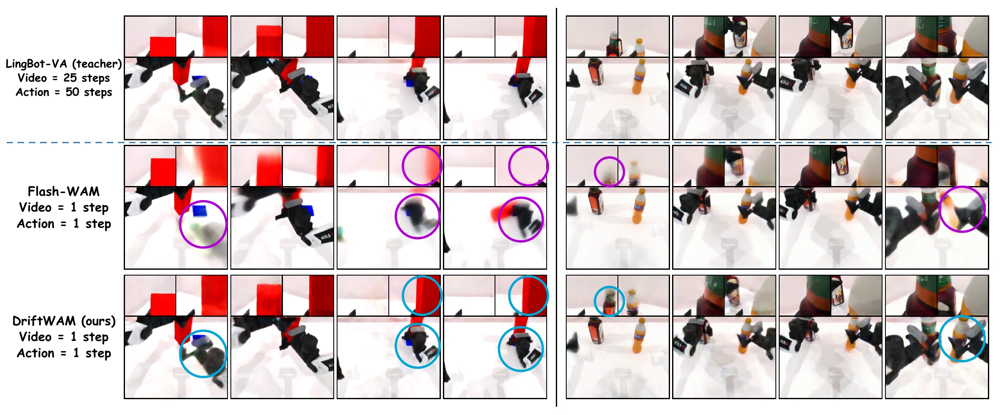

Action-aware video drifting
A joint visual–action kernel determines attraction and repulsion weights, refining the student’s video distribution with information about the actions those videos induce.
World-action models arXiv 2026
† Corresponding author
Few-step video generation, guided by the actions it induces.
The idea
Predicted videos guide a world-action model’s control decisions. DriftWAM brings those downstream actions into video distillation, aligning both visual features and induced actions.

Abstract
World-action models (WAMs) unify future video prediction and action generation for robotic control, but their reliance on iterative denoising incurs substantial inference costs. Distilling these models into few-step generators offers a promising route to efficient deployment, yet maintaining task performance under aggressive step reduction remains challenging. Existing methods rely on point-wise trajectory consistency distillation, which pursues high visual fidelity while leaving downstream action information unexploited in optimizing video generation, and also lacks explicit distribution-level alignment.
To address this, we propose DriftWAM, a few-step WAM distillation framework that incorporates the actions induced by predicted videos into video learning. Specifically, DriftWAM integrates action-aware video drifting, which performs video distribution matching through a joint visual–action similarity kernel to steer sample evolution under the guidance of these induced actions, with action-guided video regularization, which leverages the compatible teacher–student matches identified by the joint kernel to backpropagate action-level gradients directly into the video generator. Evaluations on the RoboTwin 2.0 and LIBERO benchmarks, as well as in real-world robotic manipulation tasks, show that DriftWAM consistently outperforms prior consistency distillation methods across few-step settings at the same inference speed.
Method
A shared frozen teacher measures visual features and action responses for student videos and reference videos. A joint kernel uses both perspectives to shape video learning.

A joint visual–action kernel determines attraction and repulsion weights, refining the student’s video distribution with information about the actions those videos induce.
Compatible teacher–student matches selected by the same kernel provide action-level gradients that directly supervise the video generator.
Results from the paper
+5.98 percentage points average RoboTwin 2.0 success over Flash-WAM at the same inference speed.
| Method | Steps video / action | Success | Speedup |
|---|---|---|---|
| LingBot-VA teacher | 25 / 50 | 90.77% | 1.00× |
| Flash-WAM | 1 / 1 | 76.21% | 21.46× |
| DriftWAM ours | 1 / 1 | 82.19% | 21.46× |
| Method | Success |
|---|---|
| LingBot-VA teacher | 98.4% |
| Flash-WAM | 95.1% |
| DriftWAM ours | 96.9% |
RoboTwin 2.0 latency is measured on one NVIDIA RTX 4090 relative to the 25 / 50-step teacher. The LIBERO teacher uses 20 / 50 steps; Flash-WAM’s LIBERO scores are reported results. The selector changes the distilled models’ step budget.
See the paper for all experiments and settingsModel release
The RoboTwin 2.0 transformer checkpoint is available on Hugging Face, together with the configuration and download and evaluation instructions.
Model weights released under Apache-2.0.
Citation
@misc{li2026driftwam,
title={DriftWAM: Faster World-Action Models via Action-Aware Video Drifting},
author={Minyang Li and Siyu Xu and Yunke Wang and Ying-Cong Chen and Chang Xu and Daochang Liu},
year={2026},
eprint={2611.33797},
archivePrefix={arXiv},
primaryClass={cs.CV},
url={https://arxiv.org/abs/2611.33797}
}